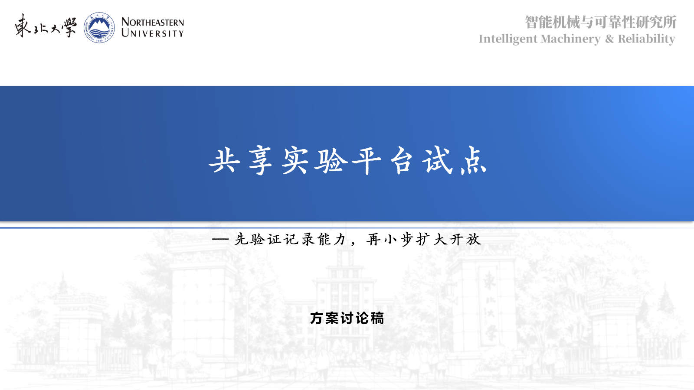
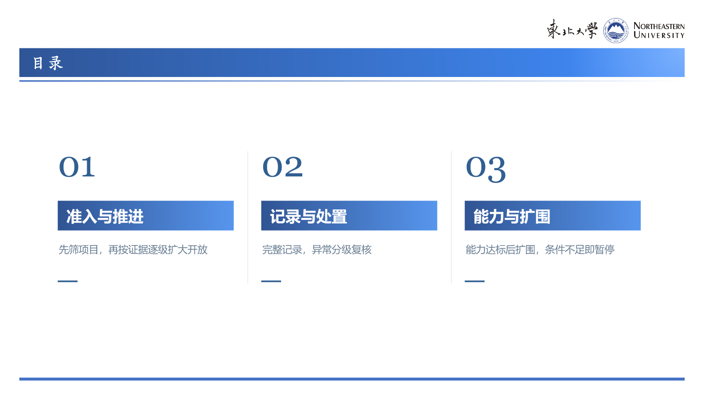
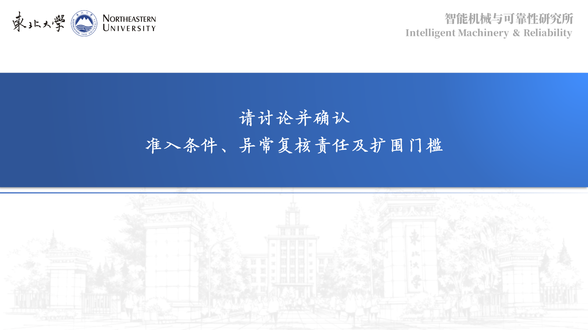

01 · 封面

02 · 目录

03 · 先筛项目，再按证据逐级扩大开放 ｜ 2/2 成功

04 · 完整记录与分级处置，守住异常责任归属 ｜ 2/2 成功

05 · 扩围以能力达标为门槛，并保留暂停条件 ｜ 2/2 成功

06 · 收束

任务：university-multi-structure-07 轮次：父审反馈修订版（非冷启动一次成功）
结构状态：正文 1、2、3 均为 2/2 次真实结构调用成功；尺寸：700×300＋470×300。
技术 QA：slides_test.py 通过，无越界；每页 PNG 已由最终 PPTX 重导入生成。
最终反馈版：结构调用成功，视觉逐页已检查

